사용 설명서
처음 실행부터 시험지에 붙일 그림을 만들기까지, 화면을 보며 순서대로 따라 할 수 있게 정리했습니다. 예시는 모두 “직각삼각형 ABC와 빗변의 중점 E” 하나로 이어집니다.
1. 설치하고 실행하기
- GeometryDrawer.exe를 받아 바탕화면이나 문서 폴더처럼 내가 쓸 수 있는 폴더에 둡니다. (Program Files처럼 쓰기 권한이 없는 폴더에 두면 업데이트가 되지 않습니다.)
- 더블클릭합니다. 처음 실행할 때 “Windows의 PC 보호” 창이 뜨면 추가 정보 → 실행을 누릅니다. 코드 서명 인증서가 아직 없어서 나오는 안내입니다.
- 작은 실행 창이 뜨고, 잠시 뒤 기본 브라우저(Edge, Chrome 등)에 작도판이 열립니다. 첫 실행은 몇 초 걸릴 수 있습니다.
실행 창의 버튼
| 버튼 | 하는 일 |
|---|---|
| 작도판 열기 | 브라우저 창을 닫았거나 열리지 않았을 때 작도판을 다시 엽니다. |
| 저장 폴더 | 도면·설정·로그가 저장되는 폴더를 엽니다. |
| 업데이트 하기 | 새 버전이 있으면 받아서 교체하고 다시 실행합니다. (14장) |
| 종료 | 프로그램을 끝냅니다. 실행 창을 닫아도 같습니다. |
2. 화면 둘러보기

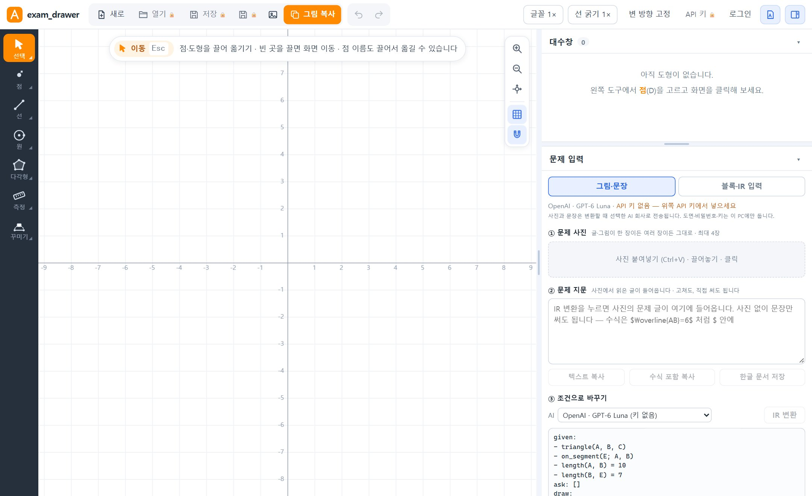
- 위쪽 도구 막대: 새로·열기·저장, PNG·그림 복사, 되돌리기, 글꼴·선 굵기, 로그인 등
- 왼쪽 작도 도구: 점·선·원·다각형·측정·꾸미기 (마우스로 직접 그릴 때)
- 가운데 작도판: 도형이 그려지는 곳. 휠로 확대·축소, 빈 곳을 끌면 화면 이동
- 오른쪽 위 대수창: 그려진 점·선·원 목록과 좌표
- 오른쪽 아래 문제 입력: 조건을 넣어 자동으로 작도하는 곳. 이 설명서의 대부분은 여기서 시작합니다.

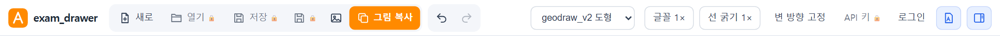
오른쪽 창의 너비는 작도판과의 경계선을, 대수창과 문제 입력의 높이는 그 사이 가로 손잡이를 끌어 바꿀 수 있습니다.
3. 첫 도형 그리기 블록으로 · API 키 필요 없음
예시: AB = 3, AC = 4, BC = 5인 삼각형 ABC에서 E는 BC의 중점, 선분 AE를 긋고 ∠BAC를 구한다.
- 오른쪽 문제 입력에서 블록·IR 입력 탭을 누릅니다.
- 처음 열면 예시 조건이 들어 있습니다. 이 설명서의 예시를 그대로 따라 하려면 텍스트를 누르고 5장의 일곱 줄을 붙여넣은 뒤 블록으로 돌아옵니다. 아래 그림처럼 블록이 채워집니다.
- 직접 만들 때는 왼쪽 분류(도형 · 점 위치 · 원 · 길이·각 · 관계 · 표시·질문)를 고르고, 가운데 목록의 블록을 클릭하거나 오른쪽 작업대로 끌어 놓습니다. 위쪽 블록 찾기에 “중점”, “수직”처럼 쳐서 찾을 수도 있습니다.
- 블록의 빈칸에 점 이름(A, B, C…)과 값(3, 4, 60…)을 씁니다. 작업대 위쪽의 A B 칩은 지금 쓰인 점이고, +D는 새 점 이름입니다.
- 필요하면 길이 단위(cm · m · 단위 없음)를 고릅니다. 그림의 길이 글자에 붙습니다.
- 초록색 ▶ 그리기(또는 Ctrl+Enter, 블록 아래 주황색 바로 그리기)를 누릅니다. 1~2초 안에 작도판에 도형이 나타납니다. 한 도형에 30초가 넘게 걸리면 멈추고 알려 줍니다.

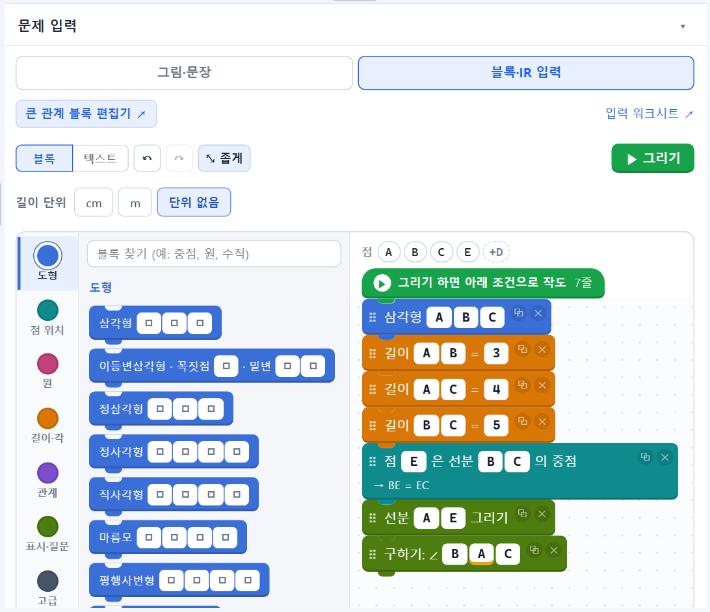
블록 종류 한눈에 보기
| 분류 | 대표 블록 |
|---|---|
| 도형 | 삼각형, 이등변삼각형(꼭짓점·밑변), 정삼각형, 정사각형, 직사각형, 마름모, 평행사변형, 볼록다각형 |
| 점 위치 | 선분 위의 점, 직선 위의 점(연장선 포함), 중점, 내분점·외분점(비를 2:3 처럼 입력), 삼등분점, 두 직선의 교점, 수선의 발, 각의 이등분선 위의 점, 외심·내심·무게중심, 한 직선 위의 세 점 |
| 원 | 중심이 O인 원 위의 점, 반지름이 정해진 원, 지름, 접선, 한 원 위의 네 점 |
| 길이·각 | 길이 = 값, 두 길이가 같음, 길이의 비, ∠ = 값, 직각, 두 각이 같음, 두 각의 합, sin 값 |
| 관계 | 평행, 수직, 같은 쪽·반대쪽, 다각형의 내부, 한 직선 위에 있지 않음 |
| 표시·질문 | 선분 그리기(조건이 아니라 선만 긋기), 구하기: 각·길이·비·넓이·둘레·넓이의 비 |
4. 결과 읽기

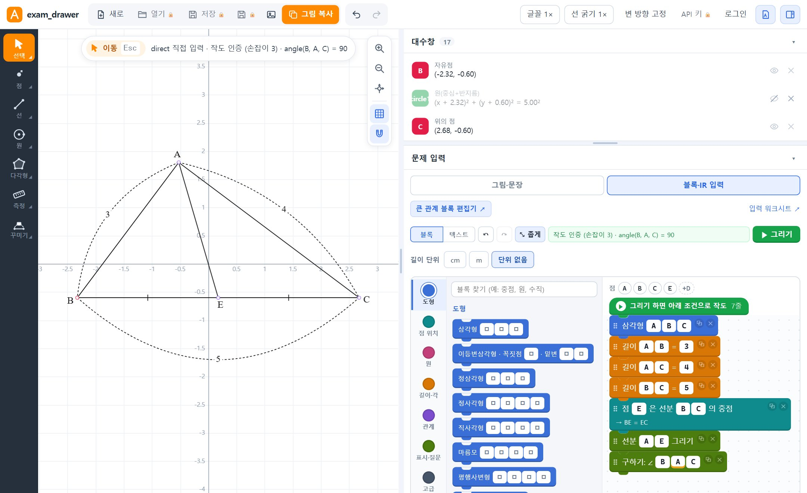

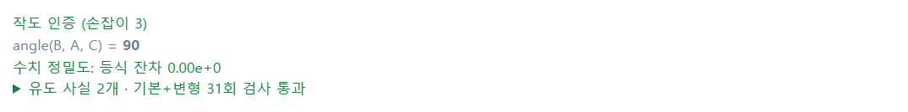
| 메시지 | 뜻 |
|---|---|
| 작도 인증 | 자와 컴퍼스로 그리는 순서를 찾았고, 점을 움직여 보아도 조건이 계속 지켜지는 것을 확인했다는 뜻입니다. |
| 손잡이 3 | 끌어서 움직일 수 있는 정도입니다. 3이면 도형 전체의 위치와 방향만 바뀌고 모양은 조건으로 정해져 있습니다. |
| 남은 모양 자유도 | 조건이 모양을 다 정하지 않았을 때 나옵니다. 점을 끌면 길이·각도가 바뀌니, 조건이 빠지지 않았는지 확인하세요. |
| angle(B, A, C) = 90 | “구하기”로 넣은 값을 실제로 잰 결과입니다. |
| 수치 정밀도 · 유도 사실 검사 | 그린 도형이 조건과 추론한 성질을 오차 없이 만족하는지 검사한 결과입니다. ▶를 누르면 자세히 봅니다. |
점을 끌어 보기
왼쪽 도구가 선택(Esc)일 때 자유점을 끌면 연결된 도형이 함께 움직이고, 조건(길이·중점·수직 등)은 그대로 지켜집니다. 중점·교점처럼 다른 도형에서 정해지는 점은 직접 끌 수 없습니다. 점 이름 글자도 끌어서 옮길 수 있습니다.
5. 텍스트로 조건 쓰기
블록 위의 텍스트를 누르면 같은 조건을 한 줄씩 글로 볼 수 있고, 여기서 바로 고쳐도 됩니다. 블록과 텍스트는 서로 자동으로 맞춰집니다. 익숙해지면 블록보다 빠릅니다.

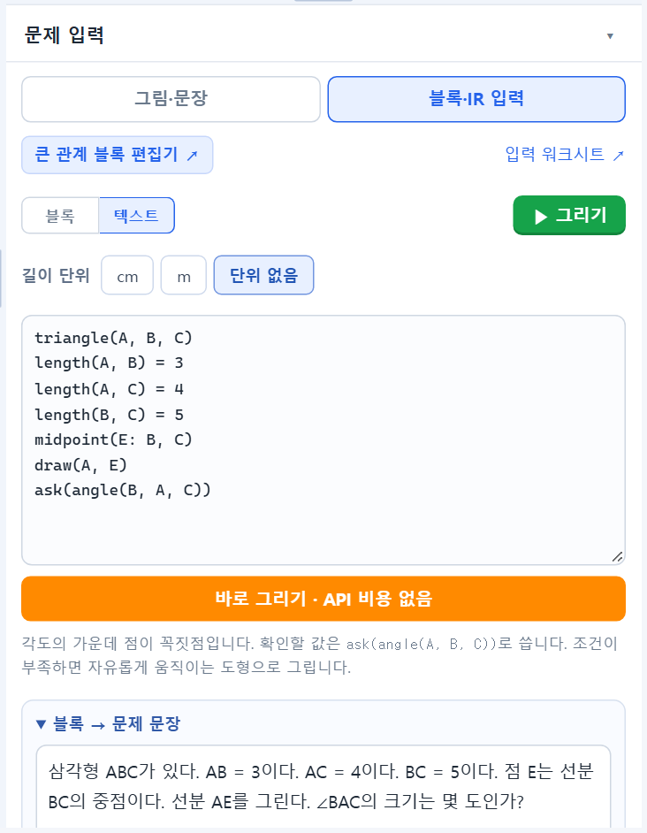
triangle(A, B, C)
length(A, B) = 3
length(A, C) = 4
length(B, C) = 5
midpoint(E: B, C) # E는 BC의 중점
draw(A, E) # 선분 AE를 긋기만 함
ask(angle(B, A, C)) # ∠BAC를 구하기| 쓰는 법 | 뜻 |
|---|---|
triangle(A, B, C) | 삼각형 ABC |
length(A, B) = 5 | AB의 길이는 5 |
angle(A, B, C) = 60 | ∠ABC = 60° (가운데가 꼭짓점) |
right_angle(A, B, C) | ∠ABC = 90° |
midpoint(M: A, B) | M은 AB의 중점 |
on_segment(P: A, B) | P는 선분 AB 위의 점 |
divide(P: A, B) = 2:3 | P는 선분 AB를 2 : 3으로 내분 (수 하나 = 2는 2 : 1) |
external_divide(P: A, B) = 2:1 | P는 선분 AB를 2 : 1로 외분. 앞 수가 크면 B 너머, 작으면 A 너머 연장선 위에 생기고, 그림에는 A부터 P까지 한 선분으로 그려집니다. (1 : 1은 외분점이 없어 오류) |
foot(H: A; B, C) | H는 A에서 직선 BC에 내린 수선의 발 |
circumcenter(O: A, B, C) | O는 삼각형 ABC의 외심 (incenter·centroid도 같은 모양) |
parallel(A, B, C, D) | AB ∥ CD (수직은 perpendicular) |
eq_length(A, B, C, D) | AB = CD |
draw(A, E) | 선분 AE를 그림에 긋기 (조건 아님) |
ask(length(A, E)) | AE의 길이 구하기 (angle·area·perimeter·ratio도 가능) |
값에는 숫자와 사칙연산, sqrt(3), pi, 삼각함수를 쓸 수 있습니다. # 뒤는 메모로 무시됩니다. 블록 목록에 있는 것은 모두 텍스트로도 쓸 수 있으니, 모르는 문법은 블록을 하나 넣고 텍스트 보기로 확인하세요.
6. 사진·문장으로 입력하기 AI · API 키와 사용료 필요
문제 사진을 넣고 IR 변환을 한 번 누르면, AI가 사진에서 문제 지문과 그림을 모두 읽어 조건으로 바꿉니다. 읽은 지문은 한글에 수식째 붙여넣을 수 있습니다. 먼저 API 키를 넣어야 합니다.

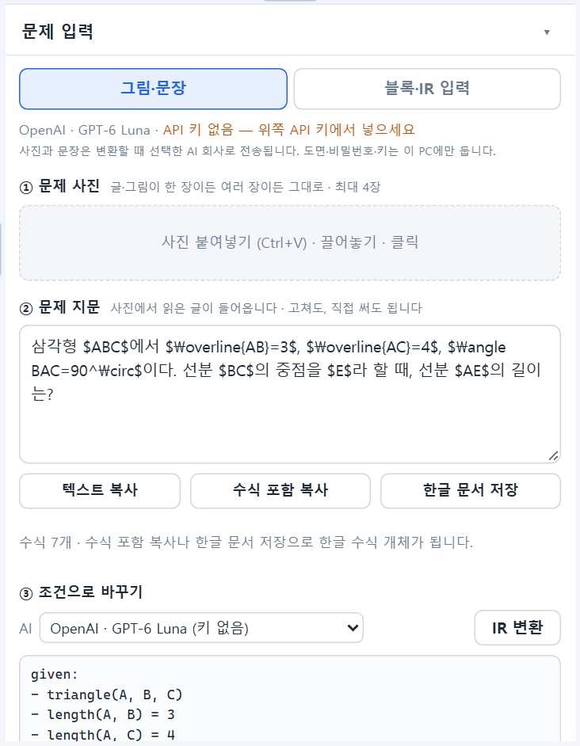
- 그림·문장 탭의 ① 문제 사진 칸에 사진을 넣습니다. 캡처한 뒤 Ctrl+V, 끌어다 놓기, 칸 클릭 모두 됩니다. 글과 그림이 한 장이든, 글 사진과 그림 사진이 따로든, 여러 쪽이든 그대로 넣으면 됩니다(최대 4장). 사진마다 ✕로 뺄 수 있습니다.
- IR 변환을 누르고 기다립니다(그림이 있으면 30~60초). 순서대로 ① 사진의 문제 글 읽기 ② 그림 판독 ③ 문장 판독을 합니다. 그림이 있는 사진에는 그림 표시가 붙고, 글만 있는 사진이면 그림 판독은 건너뜁니다.
- 끝나면 화면이 블록·IR 입력 탭으로 넘어가 변환된 조건이 블록으로 보입니다. 원래 문제와 꼭 비교하고 고친 뒤 ▶ 그리기를 누릅니다.
문제 지문을 한글로 복사하기
사진에서 읽은 문제 글은 ② 문제 지문 칸에 들어갑니다. 수식·점 이름은 $\overline{AB}=6$처럼 $ … $ 안에 적혀 있고, 틀린 글자는 칸에서 바로 고칩니다.
- 수식 포함 복사 → 완료 메시지가 나오면 한글 문서에서 Ctrl+V. 본문은 글자로,
$ … $부분은 편집 가능한 한글 수식으로 들어갑니다(선분 기호·각·분수·근호·제곱 등). 한컴 한글이 설치된 PC에서만 됩니다. - 한글 문서 저장(.hml)은 한글이 없어도 파일로 받습니다. 텍스트 복사는 수식을 글자로 바꿔 복사합니다.
- 사진 없이 지문만 칸에 써서 IR 변환해도 됩니다. 칸의 글을 고친 뒤 다시 변환하면 사진의 글을 다시 읽지 않고 고친 글을 씁니다. 사진을 바꾸면 다시 읽으며, 칸의 글을 고쳐 두었다면 바꿀지 먼저 묻습니다.
[figure])이 틀리기도 합니다. “남은 모양 자유도”가 나오면 조건이 빠졌다는 신호입니다. “조건이 서로 맞지 않습니다”가 나오면 함께 맞지 않는 줄이 나열되고, 그림에서 읽음 표시가 붙은 줄이 먼저 나옵니다. 그 줄을 지우거나 고쳐서 다시 그리세요. 사용료는 문제 하나에 수 원 정도입니다.7. 시험지용으로 다듬기
시험지 모양 ↔ 작도 모양
처음에는 시험지 모양(검은 가는 선, 명조 글씨, 점 없이 이름만)으로 그려집니다. 도구 막대 오른쪽의 A 모양 버튼을 누르면 도형 종류를 색으로 구분하는 작도 모양으로 바뀌고, 다시 누르면 돌아옵니다. PNG와 그림 복사는 지금 보이는 모양 그대로 나갑니다.

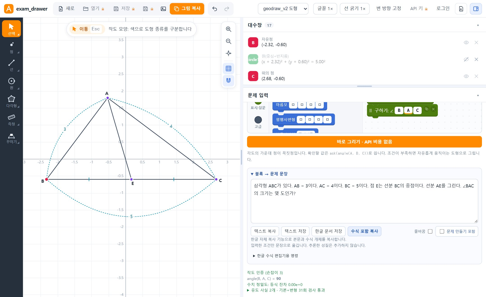
글꼴과 선 굵기

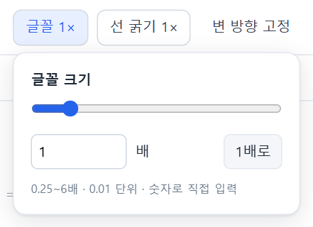
글꼴 1×을 누르면 모든 글자(점 이름, 길이·각도 글자)의 크기를, 선 굵기 1×는 모든 선의 굵기를 한 번에 바꿉니다. 슬라이더나 숫자로 조절하고 1배로로 되돌립니다. 글꼴은 0.25~6배, 선 굵기는 0.1~8배입니다.
밑변을 수평으로
- 변 방향 고정을 누르고 변을 클릭하면, 점을 끌어도 그 변이 항상 수평으로 유지됩니다. 고정 해제로 풉니다.
- 한 번만 돌리고 싶으면 왼쪽 선택 도구 모음의 밑변(B)을 고르고 변을 클릭합니다. 길이·각도 관계는 그대로입니다.
개별 도형 고치기
점·선·각도 표시 등을 클릭하면 위쪽에 속성 막대가 나옵니다. 여기서 이름, 선 모양(실선·파선·점선 등), 굵기(0.5~3배), 글자·호·눈금 크기, 점 찍기, 숨기기를 바꿉니다. 굵기는 위쪽 선 굵기(전체)에 곱해지므로, 전체를 굵게 한 뒤 설명선·점선만 0.5배로 가늘게 하는 식으로 씁니다. 선택한 것은 Delete로 지우고, Ctrl+Z / Ctrl+Shift+Z로 되돌립니다.
$ … $로 감싸면 수식으로 그려집니다. 예: $x$, $P_1$, $7\mathrm{cm}$, $\angle ABC = 30^\circ$, $\frac{1}{2}$, $\sqrt{3}$.8. 작도 도구로 직접 그리기
조건 입력 없이 마우스로 그리거나, 자동으로 그린 도형에 보조선·표시를 더할 때 씁니다. 왼쪽 도구 모음 버튼을 누르면 그 묶음의 도구 목록이 펼쳐집니다.

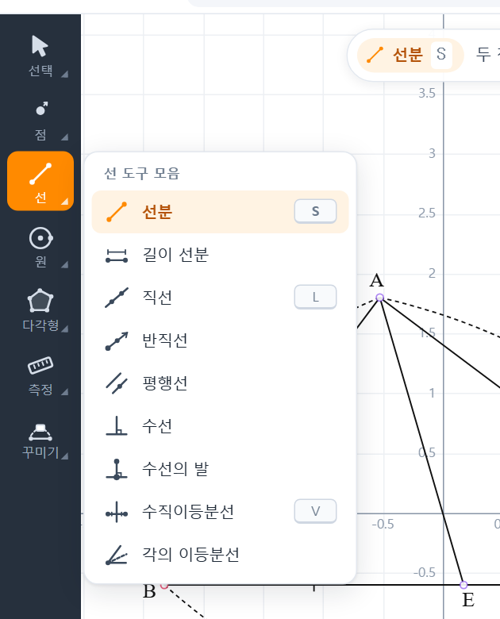
| 묶음 | 도구 |
|---|---|
| 선택 | 이동(Esc), 그룹선택(G, 끌어서 여러 개 선택), 밑변(B), 숨기기(H), 삭제 |
| 점 | 점(D), 교점(I), 중점(M) |
| 선 | 선분(S), 길이 선분(길이를 입력), 직선(L), 반직선, 평행선, 수선, 수선의 발, 수직이등분선(V), 각의 이등분선 |
| 원 | 원(C: 중심 → 원 위의 점), 반지름 원(반지름을 입력) |
| 다각형 | 다각형(P), 주어진 각(꼭짓점 → 기준점 → 각도 입력) |
| 측정 | 길이, 각도 |
| 꾸미기 | 설명선(E: 선분 옆에 길이 글자), 각도 표시, 길이 표시(같은 길이 눈금), 글자(T), 지시선 |
- 점: 빈 곳을 클릭하면 자유점, 선·원 위를 클릭하면 그 위를 따라 움직이는 점이 생깁니다.
- 중점·수직이등분선: 두 점을 차례로 클릭하거나 선분을 한 번 클릭합니다.
- 다각형: 꼭짓점을 차례로 클릭하고 첫 점을 다시 클릭(또는 더블클릭)하면 완성됩니다.
- 각도(측정): 처음 고른 점이 꼭짓점입니다. 각의 이등분선은 세 점 중 가운데가 꼭짓점입니다.
- 화면: 휠로 확대·축소, 빈 곳 끌기로 이동. 오른쪽 위 버튼으로 원점 복귀, 격자·격자 스냅을 켭니다.
9. PNG와 그림 복사
- 그림 복사(주황 버튼, Ctrl+C): 그림을 클립보드에 복사합니다. 한글·워드·파워포인트에서 Ctrl+V로 붙여넣습니다.
- PNG(그림 아이콘): 이미지 파일로 내려받습니다. 시험지 모양이면 도형 부분만 잘라 3배 해상도로 저장합니다.
시험지 모양에서는 격자 없이 내보냅니다. 글꼴·선 굵기 배율은 그대로 적용됩니다.
10. 문제 문장 만들기와 한글 복사
블록으로 넣은 조건을 문제 문장으로 바꿔 줍니다. 블록·IR 입력 탭 아래의 블록 → 문제 문장을 펼칩니다. 블록을 고치면 문장도 바로 바뀝니다.

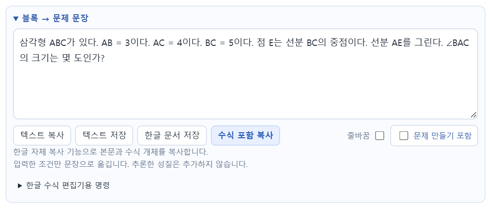
| 버튼 | 하는 일 |
|---|---|
| 텍스트 복사 | 문장을 글자로 복사합니다. (∠, °, √, 분수 기호 포함) |
| 텍스트 저장 | 문장을 .txt 파일로 내려받습니다. |
| 한글 문서 저장 | 본문과 한글 수식 개체가 들어간 .hml 파일을 내려받습니다. 한글에서 열 수 있습니다. |
| 수식 포함 복사 | 점 이름·숫자·식을 한글 수식 개체로 만든 뒤 복사합니다. 완료 메시지가 나오면 한글 문서에서 Ctrl+V. 한컴 한글이 설치된 PC에서만 됩니다. |
| 줄바꿈 | 문장마다 줄을 바꿉니다. |
| 문제 만들기 포함 | 체크하면 지금 답을 ③으로 둔 선택지 ①~⑤가 바로 문장 칸에 들어갑니다. 답은 작도한 뒤에 생기므로, 그 전에는 작도하라는 안내가 나옵니다. |
| 한글 수식 편집기용 명령 | 식 하나씩 한글 수식 편집기에 붙일 명령(예: ANGLE rm {ABE} = 40 DEG)을 복사합니다. |
입력한 조건만 문장으로 옮기며, 프로그램이 추론한 성질은 덧붙이지 않습니다. 빈칸이 있거나 문장으로 바꿀 수 없는 조건이 있으면 오류를 보여 줍니다.
11. 로그인·저장·열기
그리기는 로그인 없이 됩니다. 도면 저장·열기와 API 키만 비밀번호가 필요합니다. 저장한 도면과 키는 이 비밀번호로 암호화됩니다.
처음: 비밀번호 정하기

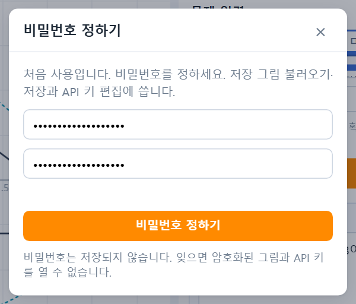
- 도구 막대의 로그인을 누릅니다.
- 처음이면 비밀번호 정하기 창이 뜹니다. 8자 이상으로 두 번 입력하고 비밀번호 정하기를 누릅니다.
- 다음부터는 같은 버튼으로 로그인합니다. 프로그램을 끄거나 로그아웃할 때까지 유지됩니다.
저장

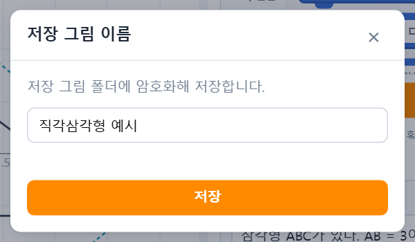
- 저장(Ctrl+S): 처음이면 이름을 묻고, 열어 둔 도면이면 그 파일에 덮어씁니다.
- 다른 이름으로 저장(Ctrl+Shift+S): 새 이름으로 저장합니다. 같은 이름이 있으면 덮어쓸지 묻습니다.
- 문제 입력으로 만든 도면은 입력한 조건도 함께 저장됩니다. 나중에 열면 입력창에 조건이 되살아나 고쳐서 다시 그릴 수 있습니다.
열기

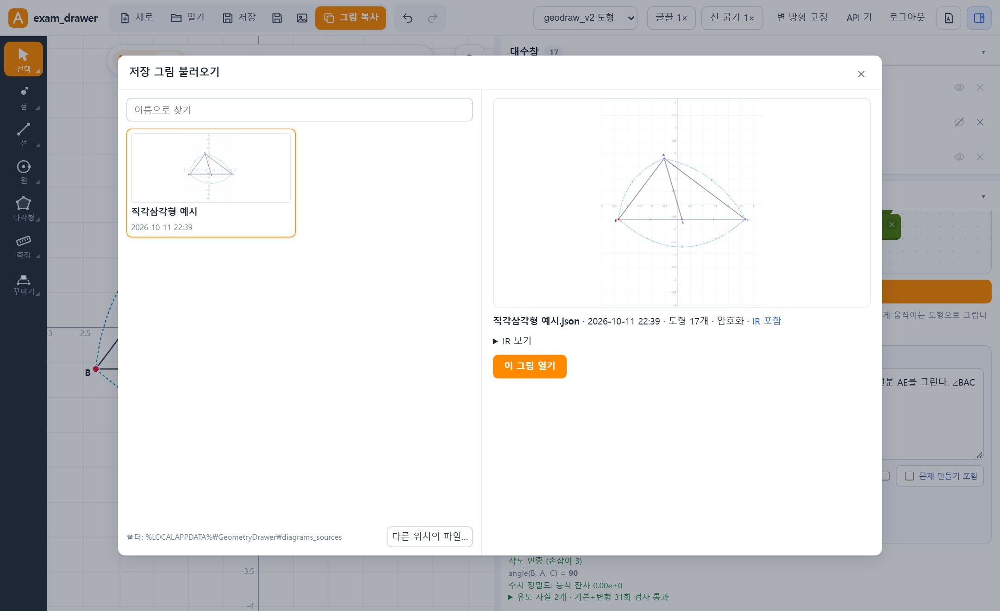
열기를 누르면 저장한 도면이 미리보기로 나옵니다. 이름으로 찾고, 고르면 오른쪽에 크게 보입니다. 더블클릭하거나 이 그림 열기로 엽니다. 다른 폴더의 파일은 다른 위치의 파일…로 열거나 작도판에 끌어다 놓습니다.
새로는 빈 작도판을 엽니다. 작업 중인 내용은 브라우저에 자동으로 보관되어 다음에 열 때 되살아나지만, 이것은 암호화되지 않는 임시 보관이니 중요한 도면은 저장하세요.
12. API 키 넣기 그림·문장 AI 변환을 쓸 때만

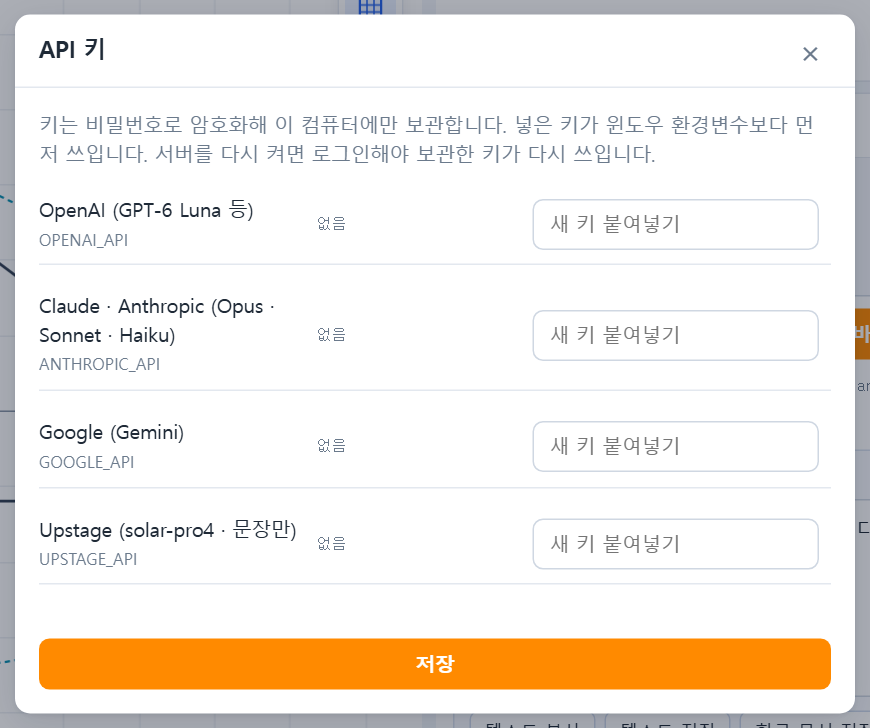
- 쓰려는 회사의 웹사이트에서 본인 계정의 API 키를 만듭니다: OpenAI(GPT-6 Luna), Anthropic(Claude Opus·Sonnet·Haiku), Google(Gemini), Upstage(solar-pro4, 문장만). 한 곳만 있어도 됩니다. 사용량만큼 요금이 나갑니다.
- 작도판에서 로그인한 뒤 도구 막대의 API 키를 누릅니다.
- 해당 칸에 키를 붙여넣고 저장을 누릅니다. 저장된 키는 앞뒤 몇 글자만 보입니다. 지우려면 칸을 비우고 저장합니다.
키는 비밀번호로 암호화해 이 컴퓨터에만 보관하며 프로그램을 다시 켜면 로그인해야 다시 쓰입니다. Windows 환경변수로 넣어도 됩니다: OPENAI_API(또는 OPENAI_API_KEY), ANTHROPIC_API(또는 ANTHROPIC_API_KEY), GOOGLE_API(또는 GEMINI_API_KEY), UPSTAGE_API.
AI 모델 고르기
그림·문장 탭 ③의 AI 목록에서 고릅니다. 기본은 OpenAI GPT-6 Luna이고, Claude(Opus 5.5 · Sonnet 5.5 · Haiku 5.5), Google(Gemini 3.8 Flash · 3.1 Pro 미리보기), Upstage(solar-pro4, 문장만 — 사진은 GPT-6 Luna가 읽음)가 있습니다. 키가 없는 회사에는 (키 없음)이 붙습니다. 목록에 없는 모델은 목록에 없는 모델…을 고르고 회사:모델 이름(예: anthropic:claude-opus-5, google:gemini-3.6-flash)으로 적습니다.
사진과 문장은 변환할 때 고른 회사로 전송됩니다. 큰 휴대폰 사진은 보내기 전에 긴 변 2000px로 자동으로 줄입니다.
13. 큰 관계 블록 편집기
외심, 교점처럼 “무엇의 무엇”인 관계를 상자에 끼워 넣듯 만드는 넓은 편집기입니다. 문제 입력의 큰 관계 블록 편집기 ↗를 누르면 새 탭에서 열립니다.

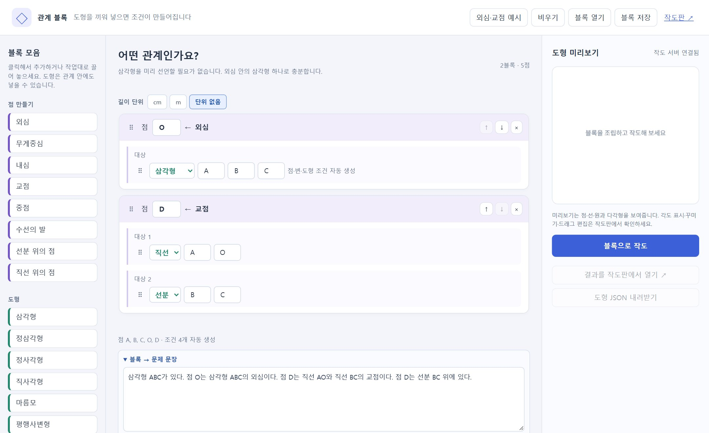
- 왼쪽 점 만들기(외심·무게중심·내심·교점·중점·수선의 발 등)를 클릭해 추가합니다.
- 관계 블록의 대상 칸에 도형(삼각형·선분·직선)을 고르고 점 이름을 씁니다. 외심 안에 삼각형 ABC만 넣으면 삼각형 조건은 자동으로 만들어집니다.
- 블록으로 작도를 누르면 오른쪽에 미리보기가 나옵니다. 결과를 작도판에서 열기로 작도판으로 가져가 다듬습니다.
외심·교점 예시로 예시를 넣어 볼 수 있고, 블록 저장/블록 열기로 작업대를 파일로 보관합니다. 아래쪽에서 문제 문장 복사도 같은 방식으로 됩니다.
14. 업데이트와 저장 위치
업데이트
- 작업을 저장합니다.
- 실행 창의 업데이트 하기를 누릅니다. 최신 버전이면 “현재 최신 버전입니다”가 나옵니다.
- 새 버전이 있으면 내려받아 확인한 뒤 프로그램이 스스로 교체하고 다시 켜집니다. 저장한 도면·비밀번호·API 키는 그대로입니다.
새 버전은 개발자 서명과 파일 해시가 모두 맞을 때만 설치되고, 새 버전이 켜지지 않으면 이전 버전으로 되돌아갑니다. 이전 exe 하나는 같은 폴더에 .previous로 남습니다. 1.0.13 이하를 쓰고 있다면 처음 화면에서 한 번만 새로 받아 바꿔 주세요.
저장 위치
| 폴더 | 들어 있는 것 |
|---|---|
%LOCALAPPDATA%\GeometryDrawer\diagrams_sources | 저장한 도면 (암호화) |
…\GeometryDrawer\data\secure | 비밀번호 확인 정보와 암호화된 API 키 |
…\GeometryDrawer\data\ingest_runs | AI 변환에 넣은 사진·문장 기록 (30일이 지나면 자동으로 지움) |
…\GeometryDrawer\logs | 실행 기록 (문제가 생겼을 때 확인) |
실행 창의 저장 폴더로 바로 열 수 있습니다. exe를 옮기거나 지워도 이 폴더는 남습니다. 다른 컴퓨터로 옮길 때는 이 폴더를 통째로 복사하면 됩니다(같은 비밀번호로 엽니다).
15. 문제 해결
| 증상 | 해결 |
|---|---|
| 브라우저가 안 열려요 | 실행 창의 작도판 열기를 누릅니다. 실행 창에 나온 주소(http://127.0.0.1:…)를 브라우저에 직접 넣어도 됩니다. |
| “30초 안에 작도하지 못해 중단했습니다” | 조건이 서로 맞지 않거나(예: 세 변의 길이가 삼각형이 될 수 없음) 너무 많을 때 나옵니다. 조건을 확인하거나 줄여서 다시 그리세요. |
| “조건이 서로 맞지 않습니다” | 메시지에 나열된 줄 가운데 하나가 틀렸습니다. “그림에서 읽음”이 붙은 줄(AI가 그림에서 읽은 위치 관계)부터 원래 그림과 비교해 고치거나 지우세요. |
| “남은 모양 자유도”가 나와요 | 조건이 모양을 다 정하지 못했습니다. 길이·각 조건이 빠지지 않았는지 확인하세요. 일부러 비워 둔 경우라면 그대로 써도 됩니다. |
| 열기·저장이 눌리지 않아요 | 로그인이 필요합니다(자물쇠 표시). |
| IR 변환이 안 돼요 | 인터넷 연결과 API 키를 확인하세요. 키를 넣은 뒤 프로그램을 다시 켰다면 로그인해야 키가 쓰입니다. |
| 수식 포함 복사가 안 돼요 | 한컴 한글이 설치된 Windows에서만 됩니다. 한글에 열린 대화상자가 있으면 닫고 다시 누르세요. 대신 한글 문서 저장(.hml)을 쓸 수 있습니다. |
| 업데이트가 실패해요 | exe가 쓰기 가능한 폴더(바탕화면·문서)에 있는지 확인하세요. 실패해도 기존 버전은 그대로입니다. |
| “Windows의 PC 보호” 창 | 추가 정보 → 실행. 처음 화면의 SHA-256과 비교하면 받은 파일이 맞는지 확인할 수 있습니다. |
| 그 밖의 오류 | 실행 창의 저장 폴더 → logs의 가장 최근 파일을 확인하세요. |